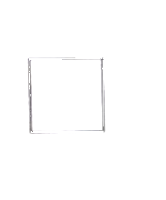
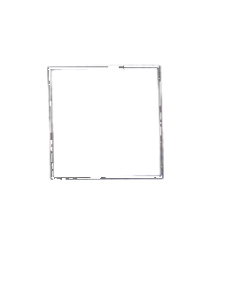
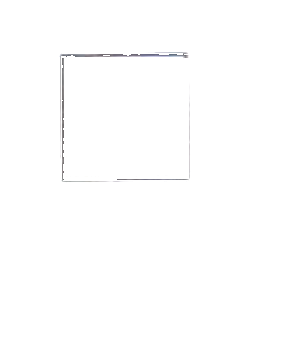
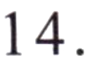

第二部分 Part IIPart IIЧасть II
第14—16题： 匹配句子。 Questions 14-16: Match the sentences.Questions 14-16: Match the sentences.Задания 14–16: Сопоставьте предложения.
Bù, wǒ zuò chūzūchē.A 不， 我坐出租车。
Fēicháng máng.B 非常 忙。
Méiyǒu, wǒ zài kāichē ne.C 没有， 我在开车呢。
Hǎo de, xièxie!D 好的， 谢谢！
Nǐ hē shuǐ ma?例如： 你喝水吗？Would you like some water?
Would you like some water?Хотите немного воды?D
你开车去吗？
你们学习忙不忙？
你在吃午饭吗？
第三部分 Part IIIPart IIIЧасть III
第17—18题： 选词填空。 Questions 17-18: Choose the correct word to fill in each blank.Questions 17-18: Choose the correct word to fill in each blank.Задания 17–18: Выберите правильное слово, чтобы заполнить каждый пропуск.
zhǎoA 找
shuìjiàoB 睡觉
míngziC 名字
Nǐ jiào shénme例如： 你叫什么 ( C ) ?What is your name?
What is your name?Как тебя зовут?17.
082弟弟没起床， 还在 ( ) 呢。
My younger brother hasn't gotten up, he is still ( ).Младший брат не встал, он все еще ( ).